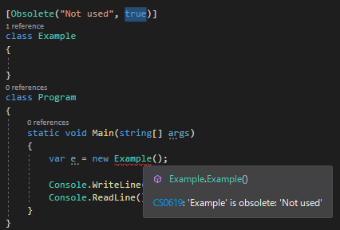
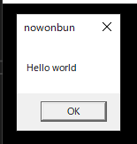

こんにちは。明月です。
この投稿はC#でアトリビュート(Attribute)を使い方に関する説明です。
C#でのアトリビュート(Attribute)とはクラスやメソッドのメタデータを記録するデータです。
ここでメタデータとは例えば、イメージファイルを考えるとイメージファイルはバイナリデータになっています。もちろん、このバイナリデータのはイメージに関する情報がありますが、ファイル名や拡張名などの関するデータはありません。
つまり、このデータはウィンドウOSのファイルに関するメタデータです。
改めて説明すると、クラスやメソッドに関する区分するための表示データだと思えば良いです。
using System;
namespace Example
{
// Obsoleteアトリビュートを使う、パラメータはエラーの時のメッセージや警告(Warning)するかエラーを発生するかのtrue、false
[Obsolete("Not used", true)]
class Example
{
}
class Program
{
// 実行関数
static void Main(string[] args)
{
// インスタンスを生成
var e = new Example();
// 任意のキーを押してください
Console.WriteLine("Press any key...");
Console.ReadLine();
}
}
}

上のObsoleteのアトリビュートは関数やクラスをもう使わない時、エラーを発生することです。
始めのパラメータはエラーの時のメッセージです。上の結果のイメージをみればエラーメッセージがNot usedだと表示されます。
その後でtrueを設定すればビルドする時にエラーが発生することだし、falseを設定すれば関数やクラスを使えますが、Visual studioからの警告メッセージが発生します。
アトリビュートは上の例みたいに実際のプログラム実行では影響になることではなく、プログラムのビルドやデバッグする時のメッセージ、リフレクション(Reflection)でクラスやメソッドの一括管理する役で使います。
リフレクション(Reflection)でアトリビュートを使う方法はリフレクションを説明する時に詳細に説明します。
まず、C# .Netフレームワークで基本的に提供するアトリビュートは下記通りです。
| アトリビュート | 説明 |
|---|---|
| CLSCompliant | アセンブリのすべてのタイプをCLSに合わせて使う。 |
| Obsolete | 使わない要素だと表示する。 |
| Conditional | プリプロセッサ識別子によって実行するかどうかを決定 |
| DllImport | 非管理コードのタイプで実行するメソッドを設定 |
| Dispid | COMのDISPID ID(ディスパッチ識別子)を設定 |
| Serializable | クラスあるいは構造体が直列化する設定 |
| Transaction | トランザクションが使えるかを設定 |
私の場合は上のアトリビュートをすべて使ったことはありません。
しかし、一番よく使うアトリビュート中ではSerializableアトリビュートで、クラスをバイナリで変換する直列化の時に使えます。
link - [C#] シリアライズ(Serialization)をする方法
DllImportの場合は.Netで作ったライブラリではなく、C/C++で作られた外部ライブラリをC#で使う時のアトリビュートです。
link - [C#] ini環境ファイルを使う方法
using System;
using System.Runtime.InteropServices;
namespace Example
{
class Program
{
// C/C++で使うUser32.dllをImportする。
[DllImport("User32.dll")]
// その中でMessageBoxを持ち込む。
public static extern int MessageBox(int hWnd, string lpText, string lpCaption, int uType);
static void Main(string[] args)
{
// C/C++のMessageBoxボックスを使う。
MessageBox(0, "Hello world", "nowonbun", 0);
// 任意のキーを押してください
Console.WriteLine("Press any key...");
Console.ReadLine();
}
}
}

Obsoleteの場合もよく使うアトリビュートです。Visual studioでクラスと関数の使用警告に関するアトリビュートです。
普通のプログラムの開発よりプログラムのアップグレードや性能向上、メンテナンス(Maintenance)する時に使えますが、既存ソースで使わないクラスや関数を削除することよりアトリビュートを作成して使えないようにアトリビュートを使える方法もあります。
これは開発スタイルより使いますが、自分の場合はソースが汚くなることが好きではないのでObsoleteアトリビュートを使うことよりそのまま削除します。
.Net frameworkで基本的に提供するアトリビュートもよく使えますが、ほぼ、カスタムアトリビュートを作って使います。
using System;
using System.Reflection;
using System.Linq;
namespace Example
{
// アトリビュート生成
// AttributeUsageのアトリビュートはどのタイプで使うに関する定義
// 該当なアトリビュートは関数だけ使う。
[AttributeUsage(AttributeTargets.Method)]
class ExampleAttribute : Attribute
{
// プロパティ
public String Name { get; set; }
public String Message { get; set; }
// アトリビュートのコンストラクタを作成すると宣言する時に必須項目になる。
public ExampleAttribute(string name)
{
// Nameプロパティ設定
this.Name = name;
}
}
class Program
{
// 例の関数、Nameはコンストラクタにより必須入力なので、作成するべき。
[ExampleAttribute("Test")]
private void Print1()
{
// コンソール出力
Console.WriteLine("Print1");
}
// 例の関数、Messageは必須項目ではないので、Messageプロパティに格納
[ExampleAttribute("Test", Message = "hello world")]
private void Print2()
{
// コンソール出力
Console.WriteLine("Print2");
}
// 例の関数、Nameはコンストラクタにより必須入力なので、作成するべき。
[ExampleAttribute("Test1")]
private void Print3()
{
// コンソール出力
Console.WriteLine("Print3");
}
// 例の関数
private void Print4()
{
// コンソール出力
Console.WriteLine("Print4");
}
// 実行関数
static void Main(string[] args)
{
// インスタンスを生成
var p = new Program();
// リフレクション(Reflection)、Programクラスでpublic、private関係せず、メソッド抽出
var methods = typeof(Program).GetMethods(BindingFlags.Public | BindingFlags.NonPublic | BindingFlags.Instance).ToList();
// 繰り返しでデータ抽出
foreach (var method in methods)
{
// メソッドでExampleAttributeのアトリビュートを取得
var attribute = method.GetCustomAttribute(typeof(ExampleAttribute)) as ExampleAttribute;
// アトリビュートがあれば - つまり、Print4は取り除く
if (attribute != null)
{
// アトリビュートのNameプロパティの値がTestの場合、Print1とPrint2関数が対象
if (string.Equals(attribute.Name, "Test"))
{
// 関数実行
method.Invoke(p, null);
}
}
}
// 任意のキーを押してください
Console.WriteLine("Press any key...");
Console.ReadLine();
}
}
}
上の例ではExampleAttributeのアトリビュートを生成しました。
ExampleAttributeのアトリビュートでAttributeUsageのアトリビュートが設定されていますが、この設定をしないと関数やクラス、変数に関係せずにすべてのところで設定することができます。
つまり、AttributeUsageを設定すれば特定なクラス、関数だけ設定します。上の例は私が関数だけで使えるように設定しました。
そしてアトリビュートはAttributeのクラスを継承しなければならないです。このことは例外処理のExceptionと似ている構造です。
コンストラクタを作成することでは必須ではありませんが、コンストラクタを作成すると、該当なパラメータが必須になります。
Programクラスで四つの関数を作成しました。
その中で三つはExampleAttributeのアトリビュートを設定してPrint4関数は設定しないです。
Main関数でリフレクションでProgramに関する関数を抽出してアトリビュートのNameがTestで設定した関数を抽出しました。
結果的にPrint1関数とPrint2関数が実行されました。
実はアトリビュート(Attribute)はリフレクション(Reflection)機能と凄く密接な関係があります。
詳細な部分はリフレクション(Reflection)で説明しました。
ここまでC#でアトリビュート(Attribute)を使い方に関する説明でした。
ご不明なところや間違いところがあればコメントしてください。
- [C#] 38. ThreadPoolの使い方2019/07/23 00:05:40
- [C#] 37. スレッド(Thread)を使い方、Thread.Sleep関数を使い方2019/07/22 23:45:05
- [C#] 36. 拡張メソッドを使い方2019/07/22 23:30:17
- [C#] 35. 文字列クラス、StringとStringBuilderを使い方2019/07/22 23:15:42
- [C#] 34. 最上位クラス(Object クラス)2019/07/20 02:27:23
- [C#] 33. 匿名形式(Anonymous Types)を使い方2019/07/20 02:22:03
- [C#] 32. ジェネリックタイプ(Generic Type)を使い方2019/07/18 22:50:16
- [C#] 31. アトリビュート(Attribute)を使い方2019/07/18 20:22:16
- [C#] 30. Linq関数式を使う方法2019/07/17 23:06:42
- [C#] 29. Linqクエリ式を使い方2019/07/17 20:57:00
- [C#] 28. リスト(List)とディクショナリ(Dictionary)、そしてLinq式を使い方2019/07/16 22:40:03
- [C#] 27. varキーワードとdynamicキーワード2019/07/16 20:41:27
- [C#] 26. 例外処理(try ~ catch)する方法2019/07/16 00:59:34
- [C#] 25. イベント(event)キーワードを使い方2019/07/16 00:48:03
- [C#] 24. ラムダ式(匿名関数)とAction、Func関数を使い方、そしてクロージャ(Closure)2019/07/16 00:36:19
- [Java] 61. Spring bootでRedisデータベースを利用してセッションクラスタリング設定する方法2022/03/01 18:20:52
- [Java] 60. Spring bootでApacheの連結とロードバランシングを設定する方法2022/02/28 18:45:48
- [Java] 59. Spring bootのJPAでEntityManagerを使い方2022/02/25 18:27:48
- [Java] 58. EclipseでSpring bootのJPAを設定する方法2022/02/23 18:11:10
- [Java] 57. EclipseでSpring bootを設定する方法2022/02/22 19:04:49
- [Python] Redisデータベースに接続して使い方2022/02/21 18:23:49
- [Java] Redisデータベースを接続して使い方(Jedisライブラリ)2022/02/16 18:13:17
- [C#] Redisのデータベースを接続して使い方2022/02/15 18:46:09
- [CentOS] Redisデータベースをインストールする方法とコマンドを使い方2022/02/14 18:33:07
- [Design pattern] 3-6. ステートパターン(State pattern)2021/11/17 20:04:47
- [Design pattern] 3-5. メメントパターン(Memento pattern)2021/11/16 20:01:36
- [Design pattern] 3-4. イテレータパターン(Iterator pattern)2021/11/15 19:31:28
- [CentOS] Linux環境(CentOS)でCassandra(NoSQL DB)をインストールする方法(DBeaverブラウザでNoSQL使い方)2021/11/12 17:33:58
- [Design pattern] 3-3. コマンドパターン(Command pattern)2021/11/05 17:01:42
- [Window] apache-tomcatでロードバランシング(Load balancing)する方法とセッションクラスタリング（セッション共有）2021/11/05 16:58:45